맛의 도시 광주. 전라도 음식이 가장 맛있다!
서울·부산·대구·인천·대전에 이어 국내 제6위를 차지하는 대도시. 화끈한 성격을 가진 도시답게 도시 ,건물들이 유명하고 강과 산이 발달되어있어 힐링을 하러 가기에 좋습니다.
Food
"광주 대표 빵집 궁전제과
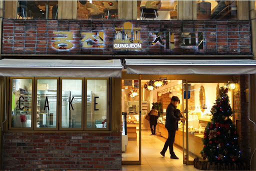 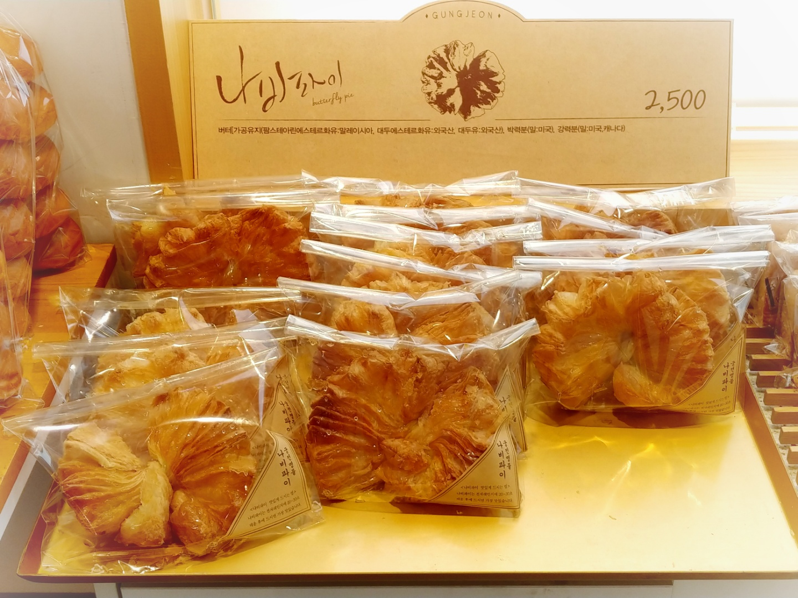⭐️⭐️⭐️⭐️⭐️
1973년 충장로의 작은 과자점으로 시작된 궁전제과는 지금 까지 3대 째로 이어지는 광주 대표 빵집입니다.
요즘 나온 프랜차이즈 빵집과 차별을 둔 빵집입니다.
나비파이는 페스추리 층이 얇고 겹겹이 쌓여 있어 식감이 바삭하고 한겹 한겹 벗겨먹는 재미를 가진 빵입니다. 일반 빵집과 다르게 카페처럼 되어있어 2층에 먹을 수 있는 공간이 있습니다.
커피가격은 1500원!!!
영업시간 :오전 10~ 밤 9시 30분
명절 당일 만 휴무
하절기인 6월 1일부터 ~8월 31일 까지는 밤 10시 영업
송정동 떡갈비 1호점
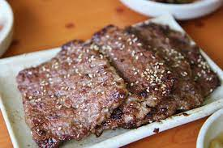 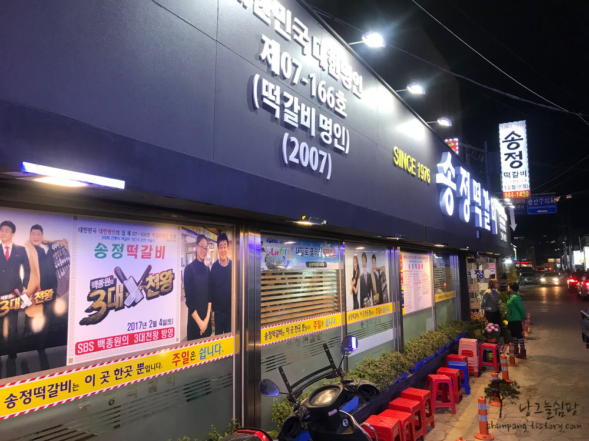⭐️⭐️⭐️⭐️
광주 송정동에는 약 20여 개의 떡갈비 전문점들이 모인 골목이 있습니다. 그중 송정동 떡갈비 1호점이 대표적인 맛집입니다.
평일과 주말을 가리지 않고 관광객이 찾아들고, 호남 지역을 방문한 외국인 관광객이라면 반드시 한 번은 들리는 장소입니다.
원래 송정 떡갈비도 소고기를 이용하다가 1990년대 후반 경제가 어려워지면서 재료비가 인상되자, 음식 값을 올리지 않기 위해 돼지고기를 섞어 메뉴로 내놓았다고 한다. 육질이 서로 다른 돼지고기와 소고기가 만나 환상의 궁합을 만들어내며 송정 떡갈비가 탄생하게 되었답니다 ^^
백종원의 3대 맛집에도 출연 ! (일단 맛집 확정 ㅎ)
View
'봉선동 다리'
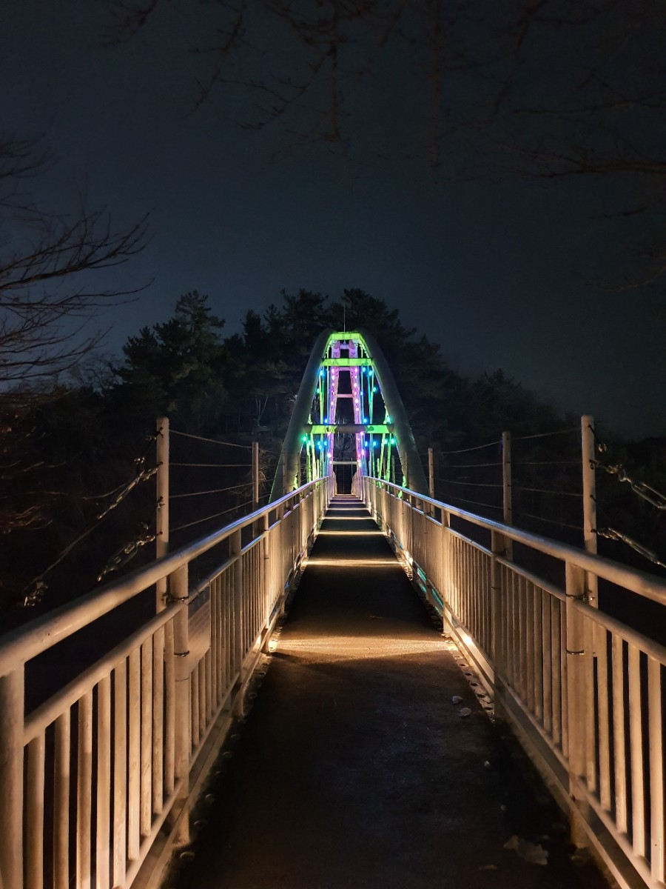 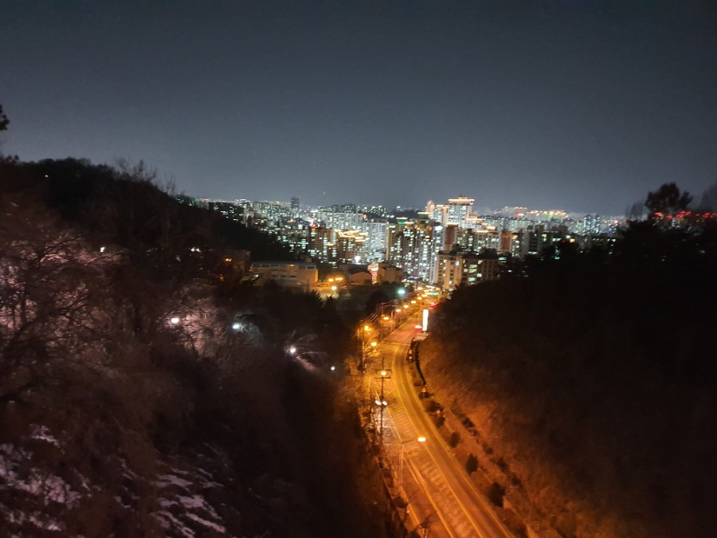⭐️⭐️⭐️⭐️
더 이상 일반적인 야경은 그만 !
현지인들도 산책로로 사용하는 다리
원래 산이 싹 밀린후 도로가 생기고 산책로가 없어졌지만 시민들의 요구로 만들어진 구름다리
구름 다리 중간에서 바라보는 양쪽 풍경들은 너무나도 멋스럽고 신선한 바람과 흙 냄새로 마음을 사로잡습니다.
살아가면서 힘든일이 있을 때 닫힌 가슴을 뚫기 위한 장소로 생각해보는 것은 어떨 까요?
"1913 송정역 시장"
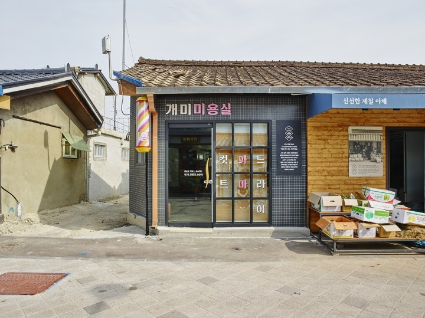⭐️⭐️⭐️⭐️
103년의 역사를 강조하기 위해서 이름을 <1913송정역시장>으로 바꿨고, 누적된 시간이 많은 만큼, 송정역시장은 상인들에겐 삶의 터전이고 방문객들에겐 다양한 추억을 선사합니다.
100년 간 이곳을 지켜온 36개의 기존 상점들의 간판의 글씨, 가게 형태, 가게 색상 중 하나는 꼭 남겨두었다. 옛 정취를 살리자는 취지로 건물 자체의 리모델링은 최소화하고, 간판의 디자인은 상인들의 추억을 담아 제작되었습니다.
송정역 시장 골목의 바닥에는 건물 연도가 쓰여져 있으며, 이 숫자가 가리키는 방향에 있는 건물의 완공 연도를 표시한 것으로 오랜 역사를 가진 시장의 모습을 되짓을 수 있습니다 ^^.
1913송정역시장 은 바꾸기 위한 변화가 아닌, 지키기 위한 변화로 탄생한 103년된 시장으로 광주에 오면 꼭 한 번쯤 들러야 하는 광주의 필수여행코스라고 할 수 있습니다.
4/27일 축제를 하니 꼭 참석할 것 !
Landmark
무등산
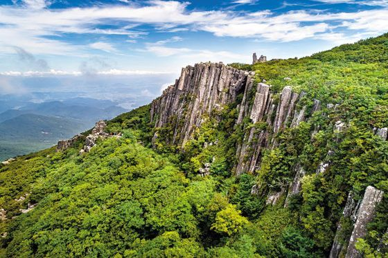 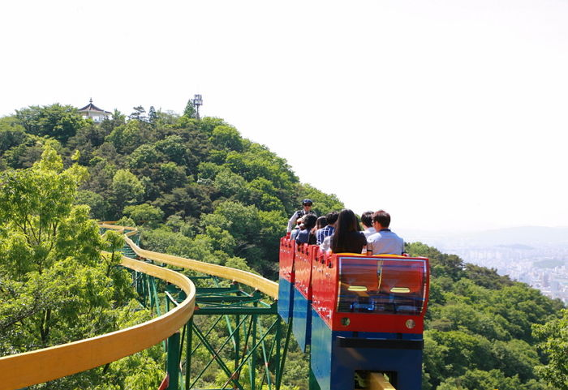⭐️⭐️⭐️⭐️⭐️
해발 1,187m의 무등산은 ‘비할 데 없이 높고 큰 산’ 또는 ‘등급을 매길 수 없을 정도의 고귀한 산’ 이라는 의미를 지니고 있습니다.
최고봉인 천왕봉을 중심으로 서석대·입석대·광석대 등 수직 절리상의 암석이 석책을 두른 듯 치솟아 장관을 이룬다. 봄에는 진달래, 여름에는 참나리, 가을에는 단풍과 억새, 겨울에는 설경 등 사계절 생태경관이 뚜렷하며, 멸종위기야생생물 수달·하늘다람쥐·으름난초 등이 서식하는 우수한 생태계를 자랑합니다.
사람들이 무등산 모노레일을 만만하게 보고 갔다가 혼나고 온다고 합니다 ^^.
모노레일 탈때는 마음의 준비를 하세요
완도타워
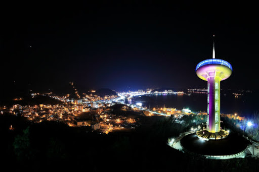 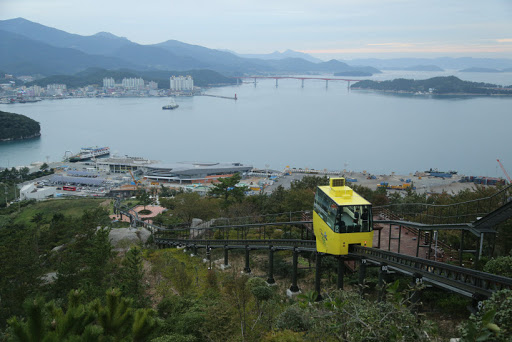⭐️⭐️⭐️⭐️
아름다운 다도해를 한눈에
2008년 9월에 준공된 완도타워는 다도해를 한눈에 볼 수 있는 완도의 명소입니다.
소정원에는 주변 자연경관 감상을 위한 전망테크가 조성되어 있어 완도전경이 한눈에 보이고
바다위 돛대형태의 막구조 파고라를 설치하여 청해진의 지역적 이미지를 부각시키는 곳입니다.
완도타워 모노레일이 개통하게 됨에 따라 최신시설을 갖춘 모노레일을 타면서 낮에는 대한민국 청정바다 수도 완도의 깨끗한 바다와 섬을 보면서 힐링할 수 있고, 밤이면 완도타워 스토리조명과 하트 섬 주도, 신지대교 등 이색적인 야간경관 정취를 만끽할 수 있습니다.
모노레일 운영시간
시간 : 오전9시 ~ 오후 9시.
요금 : 성인 6000 어린이 4000